What a VMS deposit is
means volcanogenic massive sulphide. You’ll also see VHMS (volcanic-hosted) and VAMS (volcanic-associated): different names for the same thing. Where the host is a mix of volcanic and sedimentary rock, some people say VSHMS. They belong to the same family as SEDEX: both form from submarine hydrothermal systems, seawater heated in the crust. The difference is the host. SEDEX ore sits in sediment, with brine rising up basin faults; VMS ore sits in volcanic rock, with fluid rising through volcanic vents. slide 3 lecture recording, 6 Oct
Between them, VMS and SEDEX hold most of the world’s zinc and lead, plus a lot of copper and significant silver and gold. VMS deposits are lenses of polymetallic massive sulphide formed on or near the seafloor from a focused discharge of hot, metal-rich fluid. Besides Zn, Pb, Cu, Ag and Au, they can carry Co, Sn, Se, Mn, Cd, In, Bi, Te, Ga and Ge. They span 3.4 billion years to the present day. slides 4 to 6
Metals drop out because conditions change suddenly: temperature, pressure and pH. For VMS the pressure drop is a big one. Fluid comes from deep in the oceanic crust and arrives at the seafloor, a huge fall in pressure. slide 4 lecture recording, 6 Oct
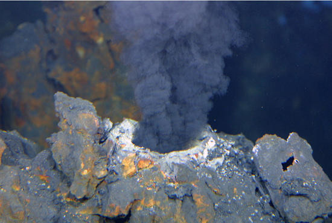
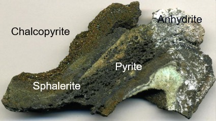
In Australia, major VMS deposits are in the Palaeozoic Tasmanides of the east (Rosebery in Tasmania, Woodlawn in New South Wales, Mount Morgan in Queensland) and in the Archean of Western Australia (Scuddles, Jaguar, Teutonic Bore). They form linear clusters, called fields. Find one and you’ll almost always find more, often at a fairly regular spacing. slide 4 lecture recording, 6 Oct
- VMS = VHMS = VAMS: polymetallic massive sulphide lenses on or near the seafloor, in volcanic hosts.
- Zn, Pb, Cu, Ag, Au (plus Co, Sn, Se, Mn, Cd, In, Bi, Te, Ga, Ge); 3.4 Ga to present.
- Metals drop out on a change in temperature, pressure and pH; deposits cluster in fields.
Tectonic settings and host rocks
Every VMS setting is extensional. Where plates spread apart, at mid-ocean ridges and continental rifts, the ore is in basalt-dominated volcanic rocks. Where plates collide, in island arcs above subduction zones and the back-arc basins behind them, the ore is in felsic volcanic rocks, mainly rhyolite and tuff. The largest VMS deposits are in felsic pyroclastic rocks in arcs and back arcs, because arc magmas bring more metal. Ridge deposits are the classic picture, but not the biggest. slide 7 lecture recording, 6 Oct
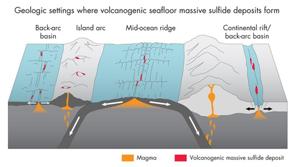
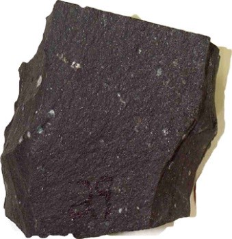
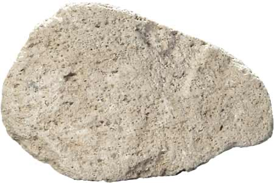
Describe colour, grain size and texture. Which one would host VMS ore at a mid-ocean ridge, and which in an island arc?
Show what I see
- A: dark, very fine grained, a few small amygdales or phenocrysts. A mafic volcanic: basalt.
- B: pale, fine grained, full of small vesicles. A felsic volcanic: rhyolite, here pumiceous.
So A is the host at spreading ridges and rifts, B the host in arcs and back arcs, where the biggest deposits are. In Australia most VMS deposits have rhyolites in the footwall and basalts in the hanging wall. lecture recording, 6 Oct
Worldwide, about 50% of VMS deposits are hosted by felsic volcanics, about 30% by mafic volcanics, and about 20% by a bimodal volcanic and sedimentary mix. Working out the setting of an ancient deposit is hard, because deformation and alteration have scrambled the volcanic structure, the deposit architecture and the chemistry. Modern seafloor mapping lets you study today’s settings and apply them back to the ancient ones. slides 8 and 9 lecture recording, 6 Oct
Which host, which setting?0 / 4
Calderas and fluid pathways
In arcs, many VMS deposits are tied to submarine : circular volcanic depressions left when magma erupts from a chamber below and the roof collapses. Collapse instantly depressurises the system, and the ring faults it makes become pathways for ore-forming fluid. Without those faults, the fluid has no focused route to the seafloor. slide 10 lecture recording, 6 Oct
Collapse a calderastep 1 of 4
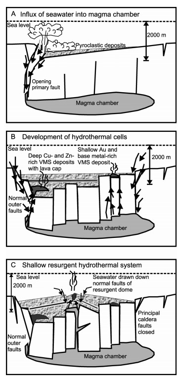
The hydrothermal engine
Cold seawater, near neutral to slightly alkaline, sinks through cracks in the crust. Near the magma chamber it heats up and reacts with the rock, becoming acidic and leaching metals, which the oceanic crust has plenty of. The hot fluid rises, vents at up to about 350 °C into 2 °C seawater, and the sulphides precipitate as fine particles that fall back under gravity. Further from the vent, at lower temperature, the same system makes manganese and iron oxides and barite instead. slides 5 and 12 lecture recording, 6 Oct
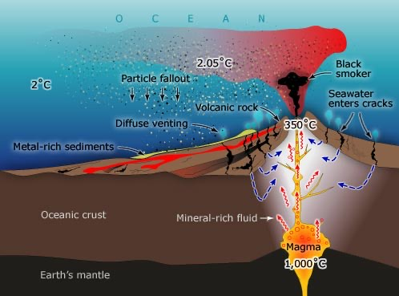
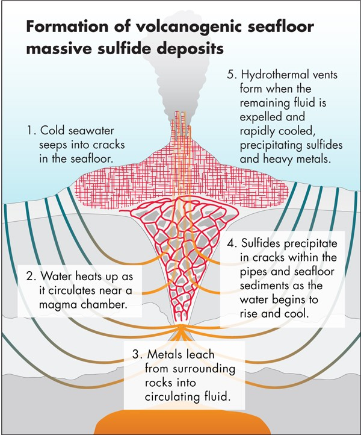
Put the VMS engine in order0 / 5
In arcs, the magma itself adds more base metal than the surrounding rock. Sulphur in vapour form is the main carrier there: vapour bubbles with attached sulphide droplets rise through the magma, separate at shallower depth as pressure falls, and are picked up by the circulating hydrothermal fluid (Mungall, 2015). The volatiles (hydrogen, sulphur, carbon, chlorine) come from seawater, from sediments on the subducting plate, and from hydrated minerals in the slab such as chlorite, serpentine and amphibole. Wetter, more oxidised magmas carry more gold, a theme that comes back with porphyries. slides 12 to 14 lecture recording, 6 Oct
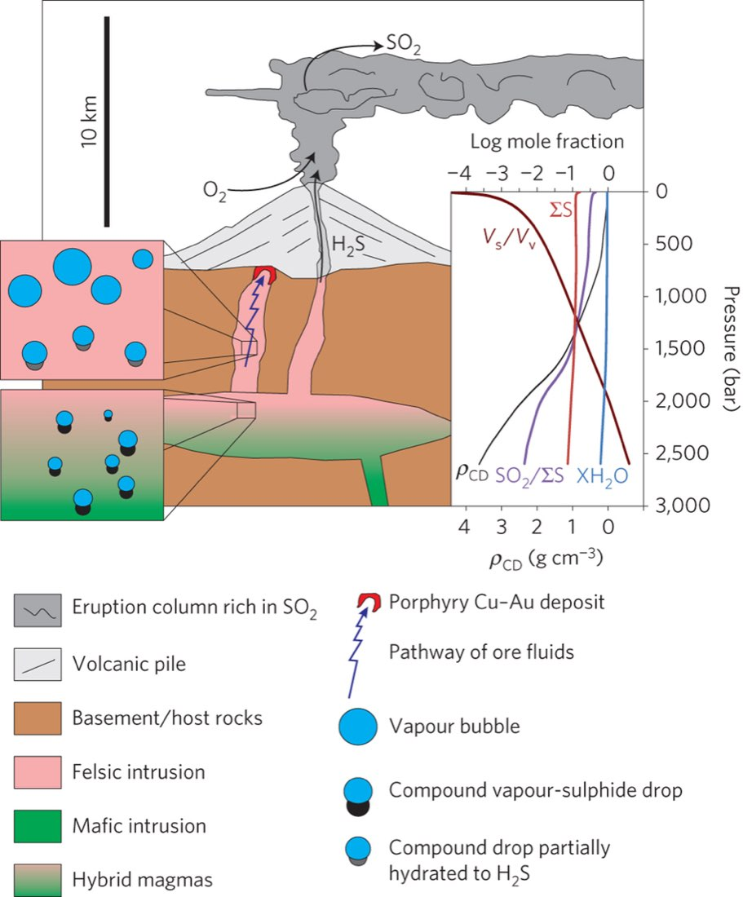
Anatomy of a mound
A VMS deposit is a lens or mound of massive sulphide on top of a pipe of altered, veined rock. The hottest fluid comes straight up the middle, so the core holds chalcopyrite ± pyrrhotite at about 350 °C. Out at the margin, below about 250 °C and down to 150 °C, you get sphalerite ± pyrite ± galena. Further out and on top, barite. Below the mound is the (or ): a network of veins in altered footwall rock, often with enough chalcopyrite to mine as copper ore. So the Zn:Cu ratio increases upward and outward from the core as the fluid cools. slides 16 and 17 lecture recording, 6 Oct
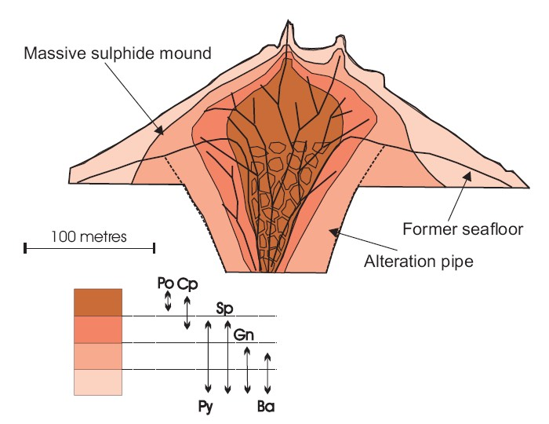
Log the mound0 / 5 zones
Tap each zone of the mound and its feeder.
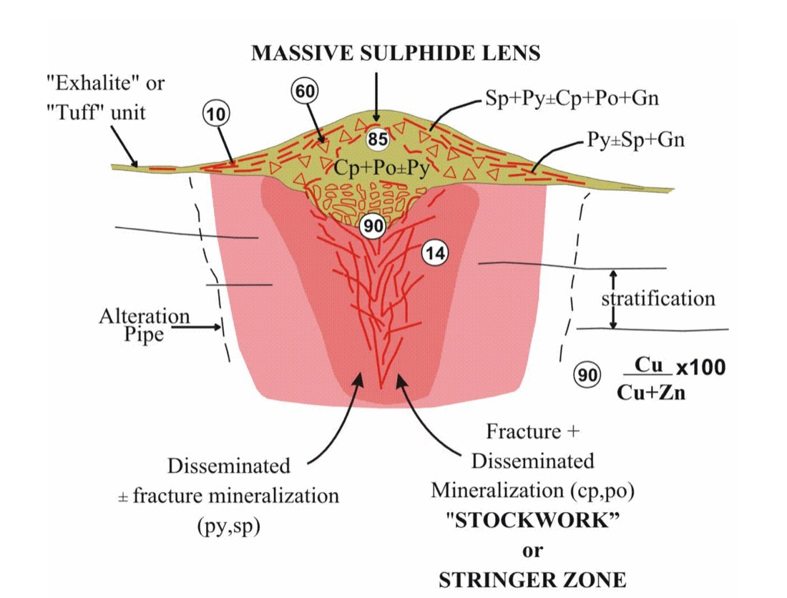
That thin layer on top is worth knowing. The contact between massive sulphide and the overlying rock is often a very thin bed of fine-grained silica. It was long taken for a rhyolite, but it seems to be hydrothermal silica: the last gasp of the system before it shut down. lecture recording, 6 Oct The other must-know is preservation. A sulphide mound is a pile of loose, fine sulphide that collapses on itself and oxidises in seawater. To survive, it has to be buried quickly under lava or sediment, and building a real deposit takes many vents and many pulses. lecture recording, 6 Oct
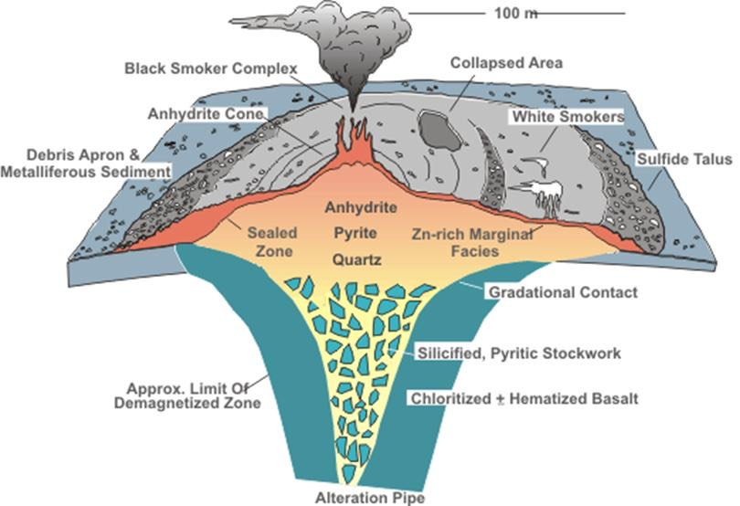
Temperature, pulses and remobilisation
Why does temperature sort the metals? Because each metal’s solubility in the chloride-rich fluid depends on temperature. As the fluid cools, copper drops out first, then zinc, lead and some gold. Slide the fluid temperature and watch which zone you’re in. slide 18
Cool the fluid
Zone boundaries read approximately off the slide 18 solubility plot.
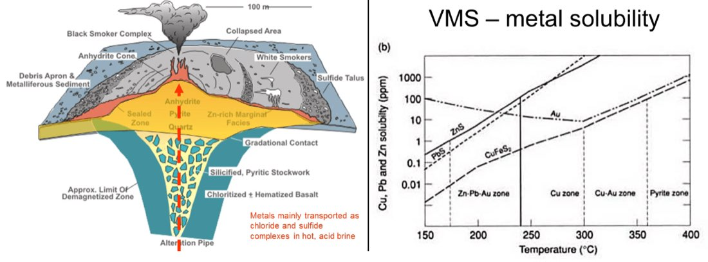
Real deposits are messier than the ideal mound, for two reasons. Remobilisation: the mound is fractured, so later hot fluid can redissolve metal and carry it up and out, some of it into the sea through the vents. That leaves deposits with a pyrite-rich core and thin metal-rich margins (often called zone refining). Pulses: the system doesn’t discharge once. A hot pulse makes high-temperature sulphides, a cooler one overprints them with low-temperature ones, so mineral suites overlap. Sulphides equilibrate quickly at these temperatures: Cu and Cu-Fe sulphides in about a year, argentite almost instantly, so each pulse leaves its own mineral signature. slides 18 and 19 lecture recording, 6 Oct
What made this?0 / 4
Alteration around the ore
Hot fluid moving through fractured volcanic rock alters it pervasively, and the alteration is zoned around the ore, which makes it your guide. Four styles matter. slide 21
| Style | What happens | Vector |
|---|---|---|
| Patchy to pervasive; lose Fe, Mg and K, gain Si and Na; quartz-albite-epidote | Most intense near the vent | |
| Regional; gain Na, lose Ca; chlorite-sericite-albite-epidote-quartz | Chlorite gets more Fe-rich and black toward ore | |
| Patchy to semi-pervasive, regional | Siderite near the deposit, calcite far away | |
| Epidote-quartz | Regional, in mafic volcanics; marks high-temperature reaction zones | Epidote-quartz (lower T) to epidote-quartz-amphibole (higher T); Al-rich epidote = hotter |
slide 21; lecture recording, 6 Oct
At Jaguar in Western Australia you can watch alteration consume pillow basalts as you walk toward the ore. Put these three faces in order, furthest from the ore first. slides 47 to 49
Order the pillows0 / 3
Tap the photos from furthest from ore to closest.
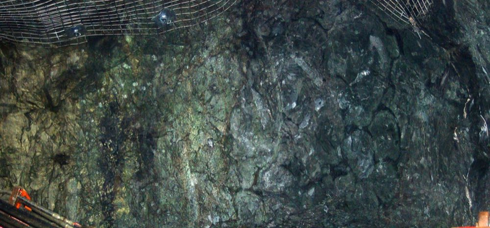
The pillow shapes are still there. What has happened to them, and why is that more intense in some places than others?
Show what I see
- Pillow outlines are preserved, but some pillows are bleached pale and others are dark green.
- Sulphide fills between and replaces parts of the pillows.
So hydrothermal fluid has replaced the basalt. Where fluid flow was most intense, the pillows are bleached and replaced by chalcopyrite and pyrite; where less fluid passed, you just get strong chlorite around the pillow rims. The intensity maps the old fluid pathways. slide 46
Name the alteration0 / 4
- Silicification: lose Fe, Mg, K; gain Si, Na.
- Spilitisation: gain Na, lose Ca; chlorite more Fe-rich toward ore.
- Carbonatisation: siderite proximal, calcite distal.
- Epidote-quartz: Al-rich epidote and amphibole mean higher temperature.
Grades, tonnages and metals
About 850 VMS deposits are known, 350 of them in Canada. The oldest is 3.4 billion years old, in the Archean Pilbara of Western Australia; the youngest, about 5000 years old, are Cu-Au deposits in ophiolites of the eastern Mediterranean and Oman. Most individual deposits are small, 0.1 to 10 Mt, but they cluster in fields, and the grades are rich. slide 23
VMS deposits supply about 22% of the world’s zinc, 6% of its copper, 9.7% of its lead, 8.7% of its silver and 2.2% of its gold. Zinc is in sphalerite; copper in chalcopyrite and cubanite, with minor bornite; silver as native silver, argentite and tetrahedrite. Gold is about 75% native gold, 20% tellurides like calaverite and 5% “invisible” gold locked in the pyrite structure. Most VMS gold comes from the Abitibi greenstone belt in Canada, where some VMS deposits are actually gold mines. Australian VMS deposits carry much less. slide 24 lecture recording, 6 Oct
Compare the deposits
Tonnages and grades from slide 25. Contained metal = tonnage × grade. A missing bar means no grade is given for that metal.
The lithotectonic classification
VMS deposits used to be classified by metal content, metal ratios (Cu:Zn+Pb), setting or host rock. The scheme now most recognised is the : the main volcanic and sedimentary units that formed with the deposits in a district. It gives five types. slide 26
| Type | Setting | Succession | Examples |
|---|---|---|---|
| Bimodal-mafic | Rifted bimodal arcs above intra-oceanic subduction | Basalt-dominated, up to 25% felsic; pillows, rhyolite domes, greywacke; cherts in hangingwall | Abitibi, east Yilgarn, Flin Flon, Urals |
| Mafic | Mature intra-oceanic back arcs, ophiolites | MORB and boninite pillows; dykes and sills up to 50%; minor sediment | Troodos, Semail (Oman), Norway |
| Pelitic-mafic | Mature basalt-pelite back arcs | Basalt and pelite equal, or pelite dominant; sills up to 25% | Outokumpu, Windy Craggy, Besshi |
| Bimodal-felsic | Continental margin arcs and back arcs | 35 to 70% felsic volcanics, 20 to 50% basalt, ~10% sediment | Pilbara, Skellefte, Tasman Orogen, Kuroko |
| Siliciclastic-felsic | Mature continental back arcs | ~80% siliciclastic, mostly felsic volcaniclastic; Fe-Mn-Ca-Ba chemical sediments | Teutonic Bore, Iberian Belt, Bathurst |
slides 28 to 32
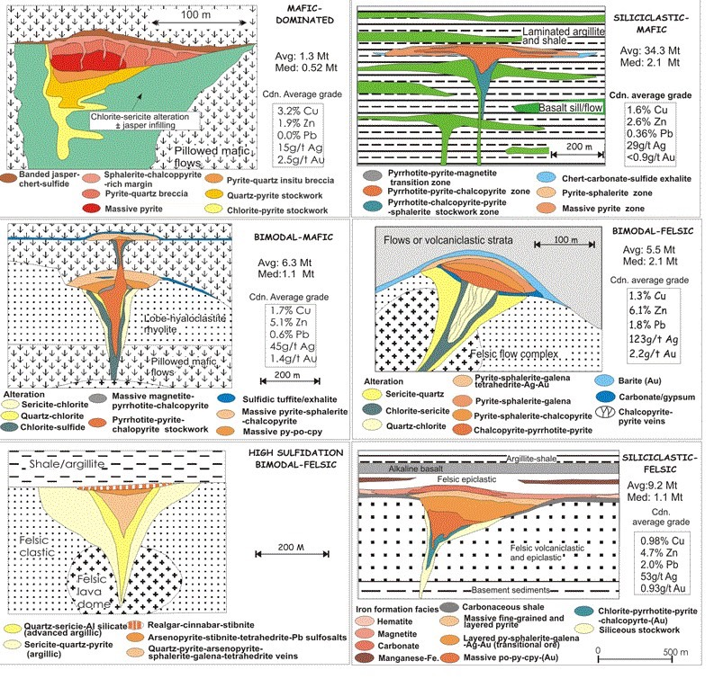
Classify the district0 / 5
Cyprus, Kuroko and Besshi
Older literature uses three styles named after classic districts. You’ll still meet them everywhere. slide 33
| Cyprus | Kuroko | Besshi | |
|---|---|---|---|
| Setting | Mid-ocean ridge, now in ophiolites | Volcanic arc | Ridges near continental margins, back-arc spreading |
| Host | Submarine mafic volcanics, pillow basalt | Felsic (rhyolite) to mafic; volcaniclastics common | Greywacke with basalt sills and flows |
| Size, grade | Small (<15 Mt), medium grade | Small to large, commonly high grade | Fairly small (except Windy Craggy >300 Mt), low grade |
| Metals | Cu, Zn | Zn, Pb, Ag, Sb (richer than Cyprus) | Cu, Zn ± Co |
| Shape | Massive pyrite lens or mound over a Cu-rich stringer zone in chloritised basalt | Mound; coarse clastic sulphide; Zn, Pb, Ag increase up and away from vents; Cu-rich stringer below | Lateral sheets of pyrrhotite- and pyrite-rich massive sulphide |
slides 34 to 39
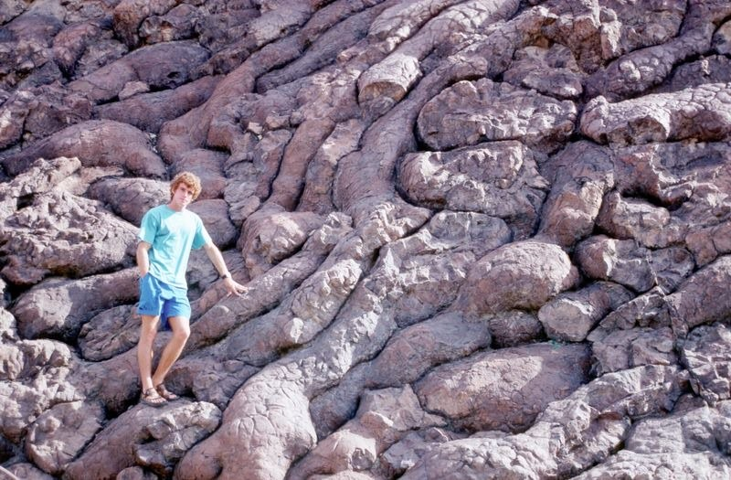
What are these rounded shapes, and what do they tell you about where this rock formed?
Show what I see
- Stacked, rounded to tube-shaped bodies about a metre across, each with a smooth skin, packed together with the gaps between them filled.
So these are pillow lavas: basalt erupted underwater, where each blob quenches a skin and the next one buds off. They tell you this was the seafloor. These are in Oman, part of an , oceanic crust shoved up onto the continent. That’s the home of Cyprus-type deposits. slide 34 lecture recording, 6 Oct
Ophiolites are rare because , oceanic crust being thrust up onto continental crust rather than going down a subduction zone, is rare. In the Troodos Mountains of Cyprus the ophiolite sits in the middle of the island, and most deposits are on its northern side, in the extrusive volcanics. Skouriotissa is the classic. Japan, by contrast, is covered with Kuroko deposits in its submarine volcanics and shallow marine sediments, and the coarse clastic sulphide in many of them points to a fairly high-energy seafloor. slides 35 to 38 lecture recording, 6 Oct
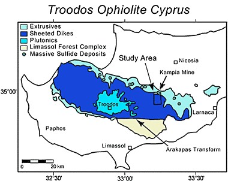
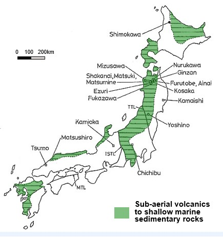
Which style?0 / 4
Jaguar: walking the decline
Australia’s biggest current VMS producers are in the Teutonic Bore field (Jaguar, Bentley) and Golden Grove in Western Australia, DeGrussa in the northern Yilgarn, Woodlawn in New South Wales (reopened) and Rosebery in Tasmania, still mined after more than 100 years. slide 40 lecture recording, 6 Oct
Jaguar is an Archean Zn-Cu-Ag deposit about 250 km NNW of Kalgoorlie. The ore is in a mix of basaltic pillow flows and sedimentary rocks; the minerals are pyrite, pyrrhotite, sphalerite and chalcopyrite. The field shows the clustering perfectly: Teutonic Bore (mined in the 1970s), Jaguar and Bentley sit along the same stratigraphy and structure a few kilometres apart, and the prospects along strike, Triumph and Daimler, are named after classic cars. Felsic volcanics form the footwall, mafic volcanics the hanging wall, and the ore sits at the contact. slides 42 and 43 lecture recording, 6 Oct
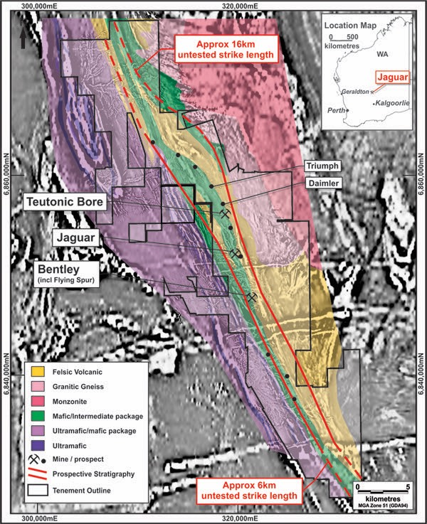
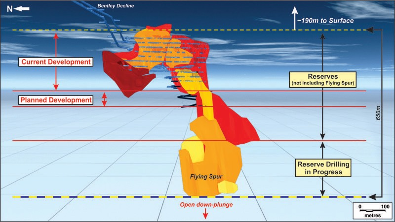
The lenses are about 99% sulphide, far denser than the host, and steep: they formed flat on the seafloor and were tilted to vertical. That makes the ore easy to see (you step from pillow basalt straight into massive sulphide) and easy to find, because massive sulphide conducts electricity very well. These deposits were found with . The hanging wall is graphitic black shale, soft and full of pyrite that oxidises once exposed, so the drives need rock bolts and mesh everywhere. slide 43 lecture recording, 6 Oct
Walk the decline: what are you looking at?0 / 5
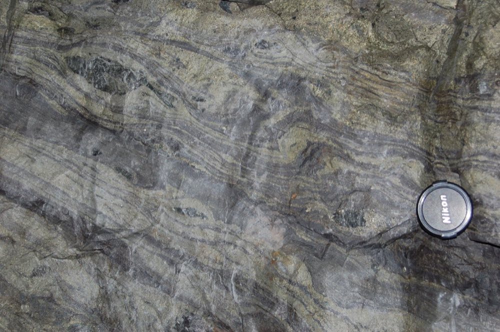
From a distance this face looks like one massive block. Up close, what do you see, and what might the bands record?
Show what I see
- Wavy, contorted bands of slightly different colour and texture through the sulphide.
- Very little galena: this ore is mostly pyrite, sphalerite and chalcopyrite.
So the “massive” sulphide is banded: layers richer in chalcopyrite, sphalerite or pyrite. Bands like these fit pulses of hotter and cooler fluid overprinting each other, later deformed. slides 58 and 61 lecture recording, 6 Oct
- The lab ore suites include Rosebery and Woodlawn, plus Cowley Hills near Woodlawn. Expect banded massive sulphide of pyrite, sphalerite, galena and chalcopyrite, and stringer ore of chalcopyrite and pyrite veins through chlorite-altered volcanic rock.
- Copper-rich (chalcopyrite, pyrrhotite) specimens come from the core and stringer zone; zinc-lead-barite-rich ones from the margin and top.
- Footwall alteration: dark Fe-rich chlorite, sericite and silica.
- Fields of deposits a few kilometres apart along one stratigraphic horizon.
- At Jaguar: felsic footwall, mafic hanging wall, ore at the contact; graphitic black shale hanging wall.
- Massive sulphide is dense and conductive: EM surveys find it.
Self-test
Answer out loud or on paper before you open each one. Claim the ounces if you got it.
Glossary and flashcards
Terms this lecture assumes or defines quickly. The dotted words in the text open them in place.
Flashcards
Where this goes next
Lecture 11 moves from the seafloor to the roots of arc volcanoes: porphyry copper-gold-molybdenum deposits. Keep the oxidised, water-rich arc magmas from this lecture in mind; they’re the ones that carry the gold.